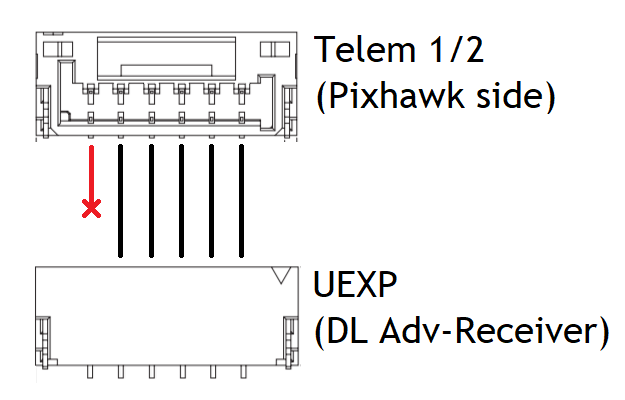
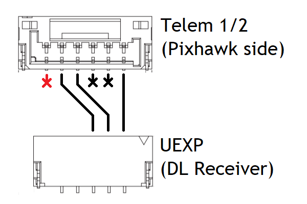

DragonLink¶
DragonLink is a UHF RC system. Compared to other UHF systems, its primary advantage is its full support for bidirectional telemetry, including MAVLink telemetry for ArduPilot.
Download the DragonLink GUI configurator and manual in the following page. There is no need to install the configurator.
Note
Navigation in the GUI is intuitive and will not be explained in detail. All configuration instructions below will be labelled by the associated page/tab in the GUI configurator
Basic Setup¶
Connect DragonLink Transmitter to radio¶
DragonLink works with any radio that supports RC signal output to external transmitters. The very popular FrSky Taranis radio connects to external transmitters via pins in the JR module-bay behind the radio. Connect the radio pins to the DragonLink Transmitter as follows.
Tip
Use the locking latch on the DragonLink Transmitter connector to identify polarity!
{kind=link}
Read as if holding radio upright
For advanced users: When using TBS’s CRSF protocol, modify the connection to the radio such that the radio signal follows the Green wire in the diagram
Connect Transmitter to the GUI configurator and change settings as described below, and always save settings after each change
General Settings: Set input 1 to the signal protocol used by the RC transmitter on its trainer jack or module-bay pins. The following protocols are supported:
- u-PPM
- S.Bus
- CRSF (Sent on the “telemetry” pin on Taranis transmitters)
- u-PPM 14SG
- PPM
Binding¶
Binding identifies one specific receiver to a transmitter
- Place the DragonLink Transmitter in Bind mode in the GUI configurator (General Settings Page) or using the Menu Button.
- Power on the Dragonlink Receiver
- Successful binding is indicated by flashing Blue and Green LEDs on the receiver
- Power cycle both transmitter and receiver after successful binding
Using multiple DragonLink Transmitters in proxity¶
Each DragonLink Transmitter must be set an unique ID such that multiple DragonLink transmitters may be used in promixity. Setting ID is done in the GUI configurator.
General Settings: Set ID to a unique, non-default value, then rebind the receiver to the transmitter
Received Signal Strength Indication (RSSI)¶
RSSI is a useful indicator of the remaining link budget available to the vehicle. DragonLink receivers may send an analog RSSI signal (0-3.3V) or a digital RSSI signal (embedded into the PPM/SBus stream). This section only describes configuration for Digital RSSI
Tip
Digital RSSI is generally recommended because not all autopilots have analog ports to read analog RSSI.
Connect Receiver to the GUI configurator and change settings as described below, and always save settings after each change
Receiver Outputs: Configure channel mixing in the PPM / SBUS stream under PPM/S-Bus out. Select any channel other than channel 1-5 to output Digital RSSI.
Set ArduPilot Parameters: Set Parameters as follows
| Parameter | Value | Description |
| RSSI_TYPE | 2 | RC Channel PWM Value |
| RSSI_CHANNEL | Any >5 | Receiver RSSI channel number |
| RSSI_CHAN_LOW | 1500 | RSSI PWM low value |
| RSSI_CHAN_HIGH | 1900 | RSSI PWM high value |
Display RSSI on Mission Planner: Right-Click on the HUD, click User Items, and check the rxrssi item in the window that opens up. Alternately, Double-Click on any flight data field on the Quick tab under the HUD, and check the rxrssi item in the window that opens up.
Telemetry Setup¶
To enable MAVLink telemetry communication, both DragonLink Hardware and Software must be setup
Connect DragonLink receiver to Autopilot¶
Connect the DragonLink receiver’s UEXP port to the Pixhawk Telem1 or Telem2 port as shown in diagrams below.
 {kind=link}
{kind=link}
When using the Advanced Receiver with Flow Control, stock Pixhawk telemetry cables can be used. Otherwise, a custom cable must be created with the Flow Control wires removed. In all cases, remove the power wire to prevent power supplies fighting each other.
Receiver Configuration¶
Connect Receiver to the GUI configurator and change settings as described below, and always save settings after each change
Radio Modem: Set Input/output buad rate to 38400 (57600 when using Flow Control) and click Save Baud
Note
Turn on Mavlink Decoding to enable flight data display on RC transmitter screen. Otherwise keep disabled
Receiver Outputs: Set the outputs for the 5-pin UEXP port as follows
| Setting | Description |
| UEXP con pin 3 | Serial In |
| UEXP con pin 4 | Serial Out |
When using Flow Control, set the outputs for the 6-pin UEXP port as follows
| Setting | Description |
| UEXP con pin 2 | Serial In |
| UEXP con pin 3 | Serial Out |
| UEXP con pin 4 | CTS |
| UEXP con pin 5 | RTS |
Transmitter Configuration¶
Adjust settings in the GUI configurator as described below, and always save settings after each change RF Settings: Select 9X mode
External Connections - Set baudrate to 57600 - Select Radio Modem for Bluetooth or USB depending on preferred connection method to Mission Planner.
Warning
Once the USB function is set to Radio Modem, the transmitter will not connect to the GUI configurator until the GUI config USB function is re-enabled again using the Menu button on the transmitter
- Save settings and re-bind transmitter to receiver
Set ArduPilot Parameters¶
Serial Port: SERIAL1, SR1 and SER1 specifies that the Telem1 hardware port is being configured. If Telem2 is used, change SERIAL2 and so on.
| Parameter | Value | Description |
| SERIAL1_PROTOCOL | 1/2 | Mavlink 1 or 2 |
| SERIAL1_BAUD | 38 | 38400 Bauds |
| BRD_SER1_RTSCTS | 0 | Disable Flow Control |
Note
Set SERIAL1_BAUD to 57 and BRD_SER1_RTSCTS to 1 when using Flow Control
Data streaming Rate
| Parameter | Value |
| SR1_EXT_STAT | 1 |
| SR1_EXTRA1 | 5 |
| SR1_EXTRA2 | 5 |
| SR1_EXTRA3 | 1 |
| SR1_PARAMS | 10 |
| SR1_POSITION | 3 |
| SR1_RAW_CTRL | 1 |
| SR1_RAW_SENS | 1 |
| SR1_RC_CHAN | 1 |
Hardware¶
The DragonLink system consists of a transmitter module and three different types of receivers. A brief introduction and specifications are given below.
V3 Advanced Transmitter (Slim)¶
This is the latest and recommended model of DragonLink transmitter, with slightly lower height (thickness) than previous models
| V3 Advanced Transmitter (Slim) | |
|---|---|
| Input Voltage | 5-18V |
| Operating Frequency | 433 MHz |
| Max Transmit Power | 800mW |
| Dimensions | 79x60x15mm |
| Weight | 90g |
Micro Receiver¶
This is the standard receiver in the DragonLink system.
| V3 Micro Receiver | |
|---|---|
| Input Voltage | 5-9V |
| Max Transmit Power | 25mW |
| Dimensions | 55x22x12mm |
| Weight | 10g |
| Output Pins | 8 |
Advanced Receiver¶
This is the high power receiver, which enables two-way telemetry communication at long ranges.
| V3 Micro Receiver | |
|---|---|
| Input Voltage | 5-9V |
| Max Transmit Power | 25mW |
| Dimensions | 70x36x11mm |
| Weight | 30g |
| Output Pins | 12 |